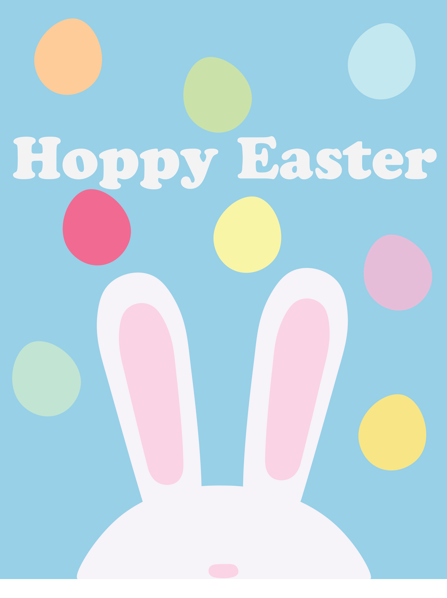
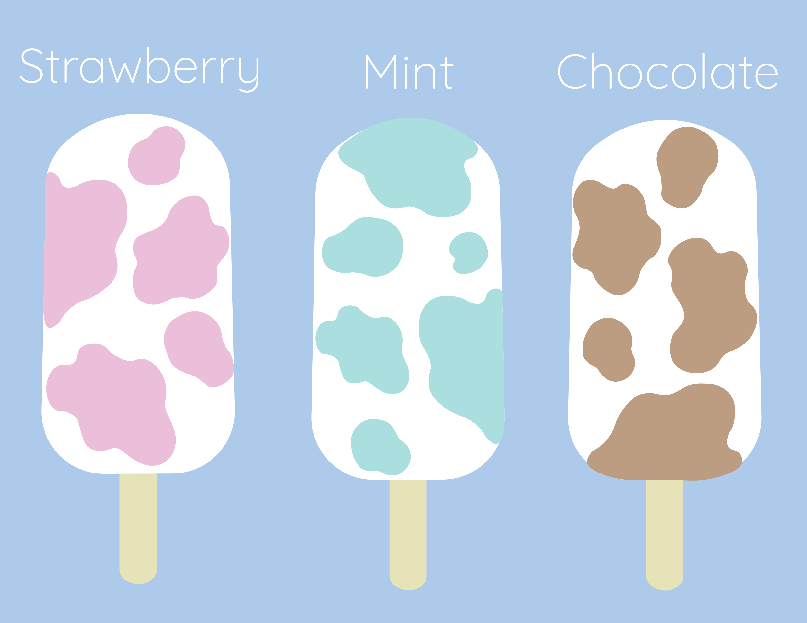
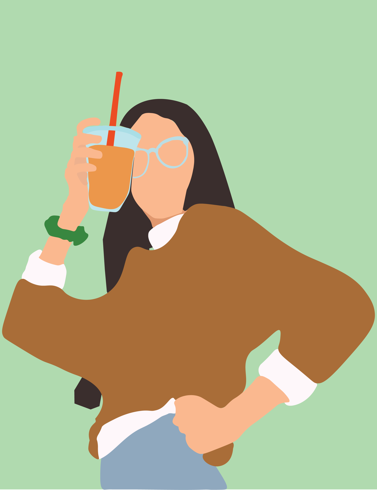

About Me
I am currently a senior at Coastal Carolina University. I am majoring in Digital Culture and Design with a minor in Film and Production Studies. I am very interested in all aspects of video production but am very passionate about video editing.
My career aspirations revolve around education in the digital media sphere. I see mysef working with a company that prioritizes education and creates digital media projects that specialize in nonfictional topics. For example, the news or academic subjects such as history and science.
I would describe my aesthetic as being vibrant and colorful in a way that draws the viewer in. I want my projects to be engaging and visually appealing. I also want them to be versatile and to be able to shown on multiple platforms such as a website, print, mobile, or on social media platforms. I take a lot of inspiration from PBS's digital presence on YouTube with their PBS Eons channel and Discovery's Animal Planet and Science Channel's presence on TikTok.
email: sgduff@coastal.edu